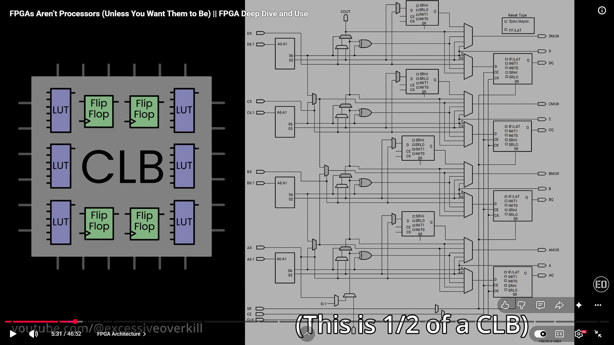
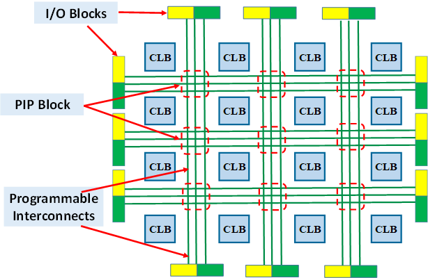

Building a LUT and a full CLB
2026-09-26 · Log #3 · ·
Goal
Finish the CLB: a LUT, a D flip flop, and a mux to choose between them.
Creating the LUT
To create a Lookup table we needed a memory element that can store our custom truth table. An array of flip flops that can be programmed is stored in one single register of size $2^n$ for an $n$-input LUT. I built a 4 bit register for 2 inputs.
The D flip flop has set and reset pins that look connected in my circuit but are not actually connected, they're placed in close proximity such that they seem connected. Connecting them does nothing here but these set and reset pins have "authority" over the D pin, when set is high or reset is high, the D pin will not work. Now that we can store information, we need to be able to select what comes out based on our 2 inputs and would you look at that we get to use the multiplexer. That gives a 2 input LUT: the dip switch box is the input of the LUT, and the value written on the left side can be set by programming it and clocking once.
Converting this to a 4 input LUT works the same way, with a 16 bit register and a bigger mux.
Creating the full CLB
Now to create a CLB we need to have the LUT, a D flip flop and a mux to select which output to take. The LUT selects an output and a select pin selects whether to choose the output from the flip flop or the LUT. I've chosen to use a ROM instead of a register to create the LUT because they are effectively the same.
This is perhaps the most basic CLB one can make. There are some things needed to be cleared. Based on the previous material it might seem that LUTs are only made of an array of flip flops but that is not true, If that is how a register/LUT were then to store a single bit the number of transistors required would be much larger which then becomes a bottleneck. Instead SRAMs are used to store data. A LUT can be thought of as memory where a single bit is read instead of a byte or more and the input is an address.
Evidence
The CLBs used in modern FPGAs are more complex than this, they can have multiple LUTs, some adder and multiplier logic and lot more. I found it difficult to get my hands on a diagram that depicts what a modern CLB looks like but the following is a screenshot I took from this video about FPGAs by the youtube channel excessive overkill. As it says it's half a CLB. Here's the link to the video

These CLB's are arranged in a fabric, or a grid like pattern and then connected to each other using programmable interconnects. These programmable interconnects have switchboxes that decide which wire to connect to which CLB and they can be programmed too. Like the following:

Building this switchbox and simulating an FPGA fabric in logisim goes into FPGA CAD design stuff that I would like to refrain from going into because this project is about creating a pipelined RISC V CPU and not simulating an FPGA and writing compilers etc and it would not be a constructive detour from the original goal. These chips also contain DSPs that can be used to enhance multiplication and addition operations but I'm cutting the rabbit hole short here.
Next
Begin work on the CPU: read the RISC-V manual and plan the single-cycle RV32I datapath.
May your logic be configurable!
← Log #2: What's inside an FPGA chip? Latches and flip flops | Log #4: Learning the RISC V ISA →